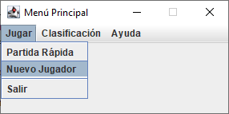

Programa Juego de Ajedrez

Opción de Nuevo Jugador
En el caso de seleccionar esta opción, se nos desplegará una nueva ventana desde la cual
podemos ingresar un nuevo jugador.
Desde esta ventana si ingresamos un nuevo nombre y pulsamos en “Crear”,
automáticamente se generará un nuevo participante que podremos seleccionar desde la
ventana de crear partida.
Si hacemos clic en el botón “Crear partida” (previa creación de nuestro jugador),
accederemos directamente a la ventana de creación de partida nueva, esta vez con un
listado en el que aparecerá nuestro nombre ya generado.